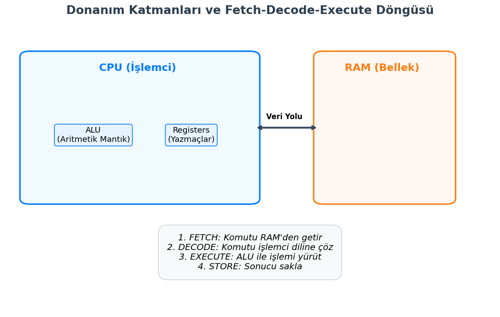
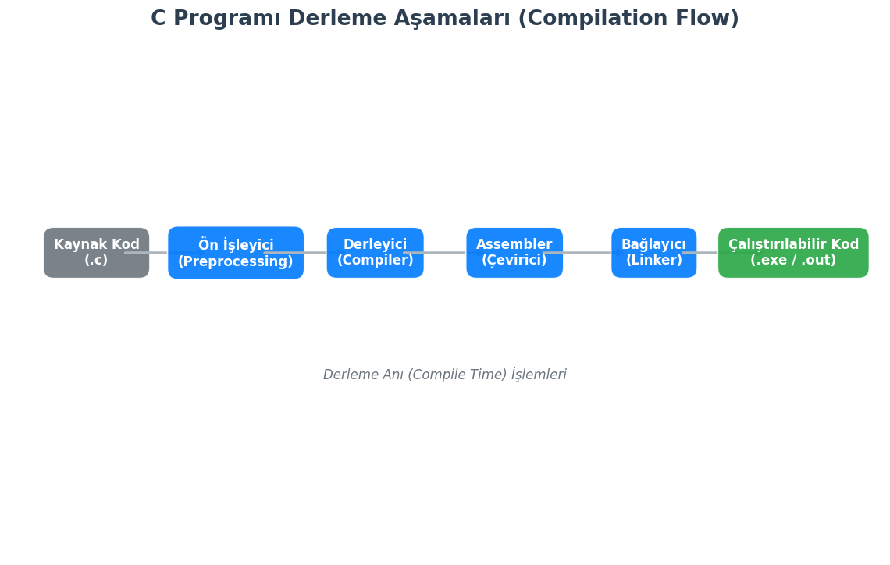
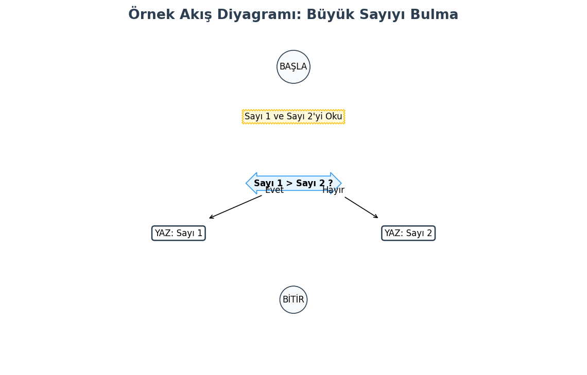

1. Bilgisayar Mimarisi ve Programlamanın Mantığı
Bir kodun donanım katmanında (CPU, RAM) nasıl işlendiğini, kaynak kodun derlenme (compilation) sürecini, algoritmik düşünme yapısını ve C programlama dilinin bellek odaklı temel veri yapılarını kapsamlı bir şekilde ele almaktadır. Amaç, sadece kod yazmak değil, kodun arka planda nasıl çalıştığını mühendislik perspektifiyle anlamaktır.
1.1. Donanım Katmanları: CPU, RAM ve ALU İlişkisi
Programlama, en temelinde donanıma emir verme sanatıdır. Yazdığımız yüksek seviyeli kodlar, işlemci tarafından anlaşılabilmesi için elektriksel sinyallere dönüşür. Bu sürecin ana aktörleri şunlardır:
- CPU (Central Processing Unit - Merkezi İşlem Birimi): Bilgisayarın beynidir. Komutları yorumlar ve yürütür.
- ALU (Arithmetic Logic Unit - Aritmetik Mantık Birimi): CPU'nun içinde bulunan, matematiksel (toplama, çıkarma) ve mantıksal (VE, VEYA, DEĞİL) işlemleri yapan birimdir.
- RAM (Random Access Memory - Rastgele Erişimli Bellek): Çalışan programların verilerinin ve kodlarının geçici olarak tutulduğu hızlı erişim belleğidir.
- Register (Yazmaçlar): CPU içinde bulunan, RAM'den çok daha hızlı ancak çok küçük kapasiteli geçici depolama alanlarıdır.
Komut İşleme Döngüsü (Instruction Cycle): Bir program çalışırken CPU şu döngüyü sürekli tekrar eder (Von Neumann Mimarisi):
- Fetch (Getir): Komut RAM'den alınır.
- Decode (Çöz): Komutun ne olduğu anlaşılır (Örn: Toplama mı yapılacak?).
- Execute (Yürüt): İşlem ALU veya diğer birimlerce gerçekleştirilir.
- Store (Sakla): Sonuç tekrar belleğe veya register'a yazılır.

1.2. Derleyici (Compiler) Mantığı: Kaynak Koddan Makine Koduna
Bilgisayarlar C dilini (kaynak kod) doğrudan anlayamazlar; sadece 0 ve 1'lerden oluşan makine dilini (binary) anlarlar. Bu dönüşümü Derleyici (Compiler) yapar.
Bir C Programının Derlenme Aşamaları (GCC Örneği):
- Ön İşleme (Preprocessing):
#includeve#definegibi komutlar işlenir. Yorum satırları silinir. (Dosya uzantısı:.i) - Derleme (Compilation): Temizlenmiş kod, Assembly diline çevrilir. (Dosya uzantısı:
.s) - Çevirme (Assembler): Assembly kodu, makine koduna (Object code) dönüştürülür. (Dosya uzantısı:
.oveya.obj) - Bağlama (Linking): Yazılan kod, standart kütüphanelerle (örn:
printffonksiyonunun kodu) birleştirilerek çalıştırılabilir dosya oluşturulur. (Dosya uzantısı:.exeveya.out)

2. Algoritmik Problem Çözme Kavramları
Kodlamaya başlamadan önce çözüm yolunun tasarlanması gerekir. Bu süreç Algoritma geliştirmedir. Algoritma, bir problemin çözümü için takip edilen sonlu adımlar dizisidir.
2.1. Sözde Kod (Pseudo-code) ve Akış Diyagramları (Flowcharts)
Algoritmaları ifade etmenin iki temel yolu vardır:
- Sözde Kod (Pseudo-code): Herhangi bir programlama diline bağlı kalmadan, konuşma diline yakın bir yapıda mantığın yazılmasıdır.
- Örn:
BAŞLA -> Sayi1 Oku -> Sayi2 Oku -> Toplam = Sayi1 + Sayi2 -> YAZ Toplam -> BİTİR
- Örn:
- Akış Diyagramları (Flowcharts): Algoritmanın geometrik şekillerle görselleştirilmesidir.
- Elips: Başla/Bitir
- Paralelkenar: Veri Girişi/Çıkışı
- Dikdörtgen: İşlem/Atama
- Eşkenar Dörtgen: Karar/Koşul (If)

2.2. Programlama Paradigmalara Giriş: Neden C?
C dili, Prosedürel (Yapısal) Programlama paradigmasını benimser. Program, fonksiyonlar ve prosedürler halinde alt parçalara bölünür.
Neden C Öğreniyoruz? * Donanım Kontrolü: Bellek adreslerine (pointer) doğrudan erişim sağlar. * Taşınabilirlik: Hemen hemen her işlemci mimarisi için bir C derleyicisi vardır. * Temel Oluşturma: C++, Java, Python gibi modern dillerin sözdizimi ve mantığı C üzerine kuruludur. * İşletim Sistemleri: Windows, Linux ve macOS çekirdeklerinin büyük kısmı C ile yazılmıştır.
3. C Dili Yapısı ve İlk Program
Bir C programı belirli bir iskelet yapısına sahiptir.
3.1. Standart Kütüphaneler ve main() Fonksiyonu
C dilinin çekirdeği çok küçüktür; ekrana yazı yazmak gibi işlemler için kütüphanelere ihtiyaç duyarız.
Hello World Analizi:
// stdio.h: Standard Input Output (Giriş Çıkış) kütüphanesidir.
// printf fonksiyonunu kullanabilmek için gereklidir.
#include <stdio.h>
// main: Programın başlangıç noktasıdır (Entry Point).
// İşletim sistemi programı çalıştırırken bu fonksiyonu çağırır.
int main() {
// Ekrana metin basar. \n imleci alt satıra indirir.
printf("Merhaba, Veri Defteri!\n");
// return 0: Programın hatasız sonlandığını işletim sistemine bildirir.
return 0;
}
3.2. Kod Yazım Standartları (Syntax & Semantics)
Derleyicinin kodu anlayabilmesi için belirli kurallara (Syntax) uymak zorunludur:
- Noktalı Virgül (;): Her komut satırının sonuna konulmalıdır. Cümle sonundaki nokta gibidir.
- Süslü Parantez ({}): Kod bloklarını (scope) belirtir.
mainfonksiyonunun nerede başlayıp nerede bittiğini gösterir. - Büyük/Küçük Harf Duyarlılığı (Case Sensitivity):
Main,MAINvemainC dili için farklı kelimelerdir. Doğrusumaindir. - Yorum Satırları: Derleyici tarafından görmezden gelinir.
- Tek satır için:
// Yorum - Çok satır için:
/* Yorum Bloğu */
- Tek satır için:
4. Veri Türleri ve Bellek Yönetimi (Memory Perspective)
C dilinde her değişken, bellekte (RAM) belirli bir yer kaplar ve bir türe sahip olmak zorundadır (Statik Tipli Dil).
4.1. Temel Veri Tipleri (int, float, char, double)
Veri tipleri, değişkenin saklayacağı değerin türünü ve bellekte kaplayacağı boyutu belirler.
- char: Karakter saklar (Örn: 'A'). Bellekte 1 Byte yer kaplar.
- int: Tam sayı saklar (Örn: 2024). Genellikle 4 Byte (32-bit sistemlerde).
- float: Ondalıklı sayı saklar (Örn: 3.14). Genellikle 4 Byte. Hassasiyeti düşüktür (6-7 basamak).
- double: Çift duyarlıklı ondalıklı sayı. Genellikle 8 Byte. Hassasiyeti yüksektir (15 basamak).
sizeof() Operatörü: Veri tiplerinin o anki sistemde kaç byte yer kapladığını verir.
#include <stdio.h>
int main() {
printf("int boyutu: %lu byte\n", sizeof(int));
printf("float boyutu: %lu byte\n", sizeof(float));
printf("char boyutu: %lu byte\n", sizeof(char));
printf("double boyutu: %lu byte\n", sizeof(double));
return 0;
}
4.2. Değişken Tanımlama ve Bellekte Adresleme
int a = 10; komutu çalıştığında arka planda şunlar olur:
1. Yer Ayırma (Allocation): RAM'de int boyutu kadar (4 byte) boş bir alan bulunur.
2. İsimlendirme: Bu alana yazılımsal olarak a ismi verilir.
3. Atama (Assignment): Bu alanın içine ikili tabanda (binary) 10 değeri yazılır.
4. Adresleme: Bu alanın benzersiz bir bellek adresi (Örn: 0x7ffee4) vardır.

4.3. Sabitler (Constants) ve volatile Kavramı
Değeri program boyunca değişmeyecek veriler için sabitler kullanılır.
- #define (Makro): Ön işlemci (Preprocessor) tarafından işlenir. Bellekte yer kaplamaz, derleme anında kodun içine "yapıştırılır".
#define PI 3.14
- const Anahtar Kelimesi: Derleyici seviyesindedir. Bellekte yer kaplar, veri tipi vardır ancak değeri salt okunurdur.
const int MAX_HIZ = 120;
volatile Kavramı: Gömülü sistemlerde çok önemlidir. Derleyiciye "Bu değişkenin değeri benim kontrolüm dışında (donanım veya başka bir thread tarafından) değişebilir, bu yüzden optimizasyon yapma, her seferinde RAM'den oku" talimatı verir.
#include <stdio.h>
#define PI 3.14159 // Makro sabiti
int main() {
const int YARICAP = 5; // Değiştirilemez değişken
// YARICAP = 10; // HATA! const değeri değiştirilemez.
double alan = PI * YARICAP * YARICAP;
printf("Dairenin Alani: %f\n", alan);
return 0;
}